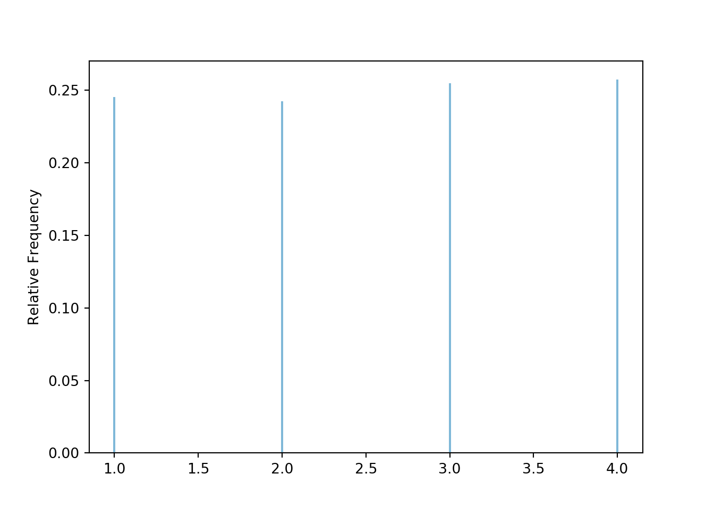
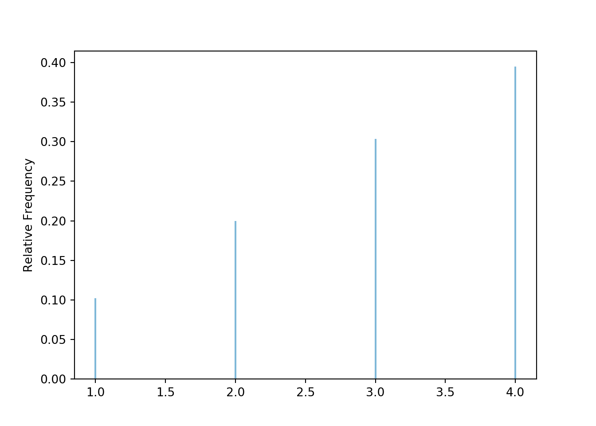

3.4 Non-equally likely outcomes: A weighted die
In the next few sections we will investigate some examples that further illustrate properties of random variables and distributions, the simulation process, and Symbulate code.
Recall that the (probability) distribution of a random variable specifies the possible values of the RV and a way of determining corresponding probabilities. The distribution of a random variable specifies the long run pattern of variation of values of the random variable over many repetitions of the underlying random phenomenon. The distribution of a random variable (\(X\)) can be approximated by
- simulating an outcome of the underlying random phenomenon (\(\omega\))
- observing the value of the random variable for that outcome (\((X(\omega)\))
- repeating this process many times
- then computing relative frequencies involving the simulated values of the RV (\(x\)) to approximate probabilities of events involving the random variable (e.g., \(\IP(X\le x)\)).
We will discuss distributions in more detail in Chapter XXX, but the examples in this Chapter provide an introduction to some of the ideas. One key idea is that any distribution can be represented by a spinner. For example, the spinner in Figure 3.1 corresponds to a single roll of a fair four-sided die. But what about a weighted die like the one in Example 2.31? Before considering the weighted die, let’s look at the fair die in Symbulate.
Let \(U\) be the result of a single roll of a four-sided die. Let \(\IP\) be the probability measure corresponding to a fair die. BoxModel assumes equally likely outcomes by default, so calling BoxModel([1, 2, 3, 4]) assumes a fair die. (The default size value is 1, so BoxModel([1, 2, 3, 4]) corresponds to a single roll of a fair four-sided die.) The random variable \(U\) is just the outcome of this roll, identified by the identity function \(X(\omega) = \omega\). (Recall that a Symbulate RV is always defined in terms of a probability space and a function RV(probspace, function). The default function is the identity: \(g(\omega) = \omega\).)

The plot displays a simulation-based approximation to the distribution of \(U\) according to the probability measure \(\IP\). We see that the four values are equally likely. This distribution can be represented by the spinner in Figure 3.1.
Now consider the weighted die in Example 2.31: a single roll results in 1 with probability 1/10, 2 with probability 2/10, 3 with probability 3/10, 4 with probability 4/10. Let \(\IQ\) be the probability measure corresponding to the assumption that the die is weighted as in Example 2.31. We can specify non-equally likely outcomes in BoxModel using the probs option. The probability space Q in the following code corresponds to a single roll of the weighted die. Note that \(U\) is still defined via the identity function.

The plot displays a simulation-based approximation to the distribution of \(U\), but now according to the probability measure \(\IQ\). This distribution can be represented by the spinner in Figure 3.4.

Figure 3.4: Spinner corresponding to a single roll of the weighted four-sided die in Example 2.31.
Note that in the two scenarios, (1) the sample space is the same, \(\Omega=\{1,2,3,4\}\), and (2) the random variable is the same function, \(U(\omega) = \omega\). What changes is the probability measure, from \(\IP\) (fair die) to \(\IQ\) (weighted die). Changing the probability measure changes the distribution of \(U\).
Another way to model a weighted die is with a box model with 10 tickets — one ticket labeled 1, two tickets labeled 2, three tickets labeled 3, and four tickets labeled 4 — from which a single ticket is drawn. A BoxModel can be specified in this way using the following {label: number of tickets with the label} formulation48. This formulation is especially useful when multiple tickets are drawn from the box without replacement.

Some lessons from this example.
- Changing a probability measure changes distributions of random variables.
- Distributions can be represented by spinners.
- Box models can handle situations with non-equally likely outcomes. In Symbulate,
BoxModelhas options likeprobsthat can be used to specify probabilities of individual outcomes.
Braces
{}are used here because this defines a Python dictionary. But don’t confuse this code with set notation↩︎